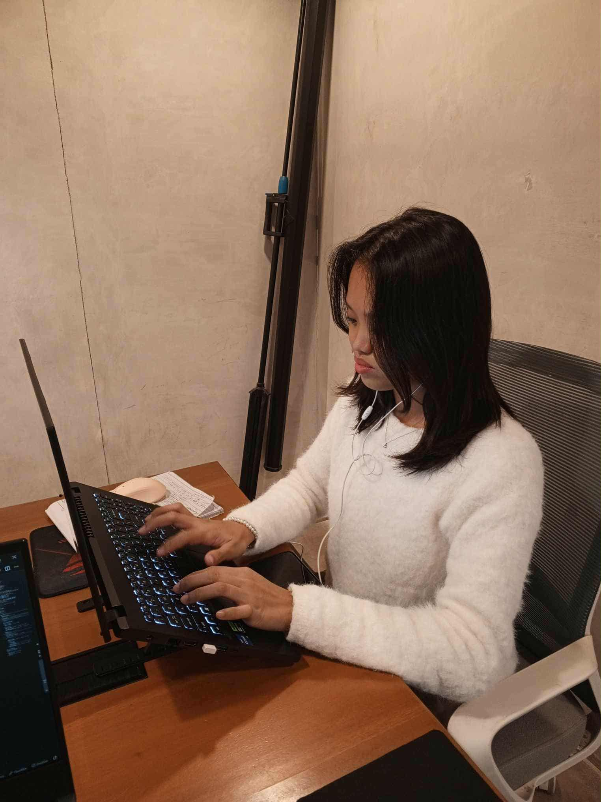

ABOUT ME
Hi! I'm Lyka!
Computer Engineering Student
Hello! I’m Lyka A. Sacdalan, a Computer Engineering student with a passion for web development. I’m still learning and exploring, but I enjoy creating clean, functional, and modern websites. With my technical background from engineering and eagerness to grow, I’m excited to keep improving and take on opportunities that will help me become a better developer.

Education
2022-present
Bachelor of Science in Computer Engineering
Bulacan State University
I am currently pursuing a Bachelor of Science in Computer Engineering (BSCpE), where I am developing strong skills in programming, hardware design, and problem-solving. My studies are helping me gain both technical knowledge and practical experience that prepare me for real-world applications in technology and engineering.
2020-2022
Science, Technology, Engineering, and Mathematics (STEM)
Our Lady of Fatima University
Completed the Science, Technology, Engineering, and Mathematics (STEM) strand at OLFU, where I built a strong foundation in science and problem-solving. I also gained valuable skills in research, critical thinking, and collaboration, which have been helpful in my college journey.
2010-2020
Grade School and Junior High School
Lux Mundi Academy
Studied at LMA from grade school to junior high, where I developed not only my academic foundation but also my skills, values, and attitudes. My time there helped shape my discipline, teamwork, and passion for continuous learning, which I carried forward to senior high school and now to college.
Experience
2025
Intern Software Developer
Lightweight Solutions Corp.
Completed an internship at LWS, where I gained valuable knowledge about web development. The experience also helped me develop professionalism, workplace practices, and a positive attitude, which further strengthened my growth in both technical and personal aspects.
My Skills
| Skill | Level | Proficiency |
|---|---|---|
| HTML |
|
Advanced |
| CSS |
|
Intermediate |
| JavaScript |
|
Intermediate |